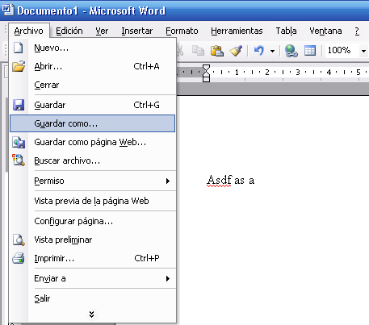

Conjunto de aplicaciones de escritorio pensadas para maximizar la
productividad en tareas ofimáticas. Características:
Pack integrado de aplicaciones.
Diseñadas para el trabajo de oficina.
Capaces de interactuar entre ellos a alto nivel.
Interfaz de usuario homogénea.
Versiones de Office
Office está desarrollado por Microsoft y funciona
sólamente en sistemas operativos Windows y
Macintosh, aunque van a sacar este año una versión para
Ipad.
Desde 1990 (primera versión) hasta hoy han aparecido varias
versiones de Office. Cada versión nueva era una
evolución con respecto a la anterior y marcaba un estándar en
la evolución de la ofimática de usuario.
La versión de Office 2003 es la más utilizada y la que vamos a
practicar en las próximas sesiones.
Actualmente existen en el mercado herramientas ofimáticas
disponibles vía web (en la nube) y gratuitas, definiendo el nuevo camino que está
tomando la informática.
Las tres aplicaciones principales de Office son las
siguientes:
Microsoft Word. El procesador de textos.
Microsoft Excel. La hoja de cálculo.
Microsoft Powerpoint. Diseñador de
presentaciones.
Procesador de textos
Un procesador de texto es una aplicación informática destinada a la
creación o modificación de documentos escritos por medio de una
computadora. Representa una alternativa moderna a la antigua máquina de
escribir, siendo mucho más potente y versátil que ésta.
Estructuración y organización.
Formatos y efectos.
Tipografías.
Corrección ortográfica.
Interacción con el entorno
Para trabajar con Word utilizaremos tanto el
teclado como el ratón. Con el teclado realizaremos la introducción de
textos y con el ratón gestionaremos las operaciones sobre el texto.
Recordemos dos conceptos fundamentales del procesador de textos:
Cursor de edición. Indica la posición a partir
de la cual se introducirá el texto. Lo podemos posicionar en
cualquier lugar del documento.
Cursor del ratón. Lo utilizamos para
posicionar el cursor de edición y para realizar operaciones básicas
como son las de copiar/pegar.
Teclado y cursor de edición
Comentemos las teclas más importantes para la edición de texto:
Carácteres y barra espaciadora.
Mayúsculas. Para escribir en mayúsculas.
Suprimir/Retroceder. Nos permiten borrar un carácter en la posición anterior o posterior al cursor de edición.
Salto de línea. Para añadir un nuevo párrafo.
Cursores. Nos permiten mover el cursor con el teclado.
Ratón
Dispositivo fundamental para la edición de textos.
Acciones del menú principal. Lo utilizamos para llevar a cabo acciones como "Guardar", aplicar formatos, añadir imágenes, etc.
Situar cursor de edición. Pulsando el botón izquierdo sobre el documento llevamos el cursor de edición a ese lugar.
Seleccionar/copiar/cortar/pegar. Utilizando la técnica de selección y copiado podemos trabajar de una manera rápida y eficaz sobre el documento.
El entorno de trabajo
Veamos las partes principales del entorno de trabajo de
Word, necesario para poder empezar a trabajar.
Menú principal. Contiene todas las acciones y
herramientas de la aplicación, pero es complicado.
Barra de herramientas. Nos da acceso rápido a
las acciones más comunes de usuario.
Zona de trabajo. Es la zona principal sobre la
que escribiremos y formatearemos nuestro texto.

Formato de texto
Las operaciones básicas del formato de texto son las siguientes:
Fuente. Definimos el tipo de fuente a utilizar
en nuestro texto.
Tamaño de fuente. Tamaño de fuente de nuestro
texto.
Negrita/cursiva/subrayado. Propiedades que
asignamos a nuestro texto, pueden activarse al mismo tiempo una o
varias de estas propiedades.
Color de texto y color de fondo.
Formato de párrafo
Veamos cuáles son las operaciones básicas que podemos realizar a
nivel de párrafo:
Alineación. Podemos alinear un párrafo a la
izquierda, derecha, centro, o justificado.
Espaciado de línea. Nos permite controlar cuánto espacio queremos dejar entre línea y línea.